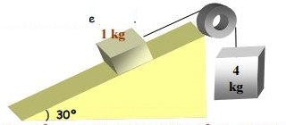

rr.-En un plano inclinado 30o sobre la
horizontal, hay un bloque de masa 1kg unido a otro de masa 4kg
mediante un hilo que pasa por una polea, de masa y rozamiento
despreciables. Calcula la aceleración del sistema sin el
coeficiente de rozamiento vale 0,2
